Connaissances générales de l'UAS
Pour stocker sur une longue période une batterie LiPo, il est recommandé
De la charger à 50% environ.
Le sigle «CG» que l'on retrouve sur les abaques de domaine de vol, signifie
Centre de Gravité.
Sur ce drone de type avion, la position la plus adaptée pour ajouter une charge (capteur, caméra, etc..) est celle qui porte le numéro
3 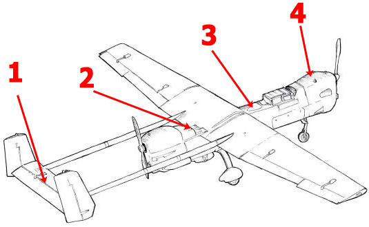
35C indiqué sur une batterie destinée à un drone indique
La capacité de décharge de la batterie.
A l'aide de cette image, indiquez quel aéronef multi-rotor sans équipage à bord va se mettre en roulis ou s'incliner à droite
C
A l'aide de cette image, indiquez quel aéronef multi-rotor sans équipage à bord va se rapprocher de vous
B
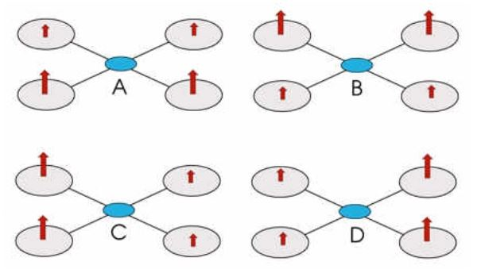
L'attitude de vol d'un aéronef sans équipage à bord de type multi rotor est contrôlée :
Par les moteurs qui modifient leur vitesse de rotation en fonction de la direction souhaitée du vol.
Le courant de charge d'une batterie est donné :
En Ampère (A).
Vous avez une batterie marquée 5C 1500 mAh, quelle est sa capacité de charge maximale ?
7,5 A.
L'effet mémoire affecte particulièrement les batteries :
NiCD
Le service de communication assurant la commande et le contrôle entre l'aéronef sans équipage à bord et l'unité de commande (CU) se nomme :
Le service de liaison C2.
D'après l'image ci-dessous, les batteries branchées en série sont représentées par le dessin numéro :
1
D'après l'image ci-dessous, les batteries branchées en série sont représentées par le dessin numéro :
3
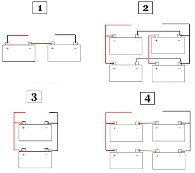
La capacité de décharge maximale d'une batterie :
Est un point important qui permet de délivrer un courant supérieur à la capacité de la batterie pendant une durée réduite.
Sur un drone de type multirotor comme celui présenté sur la photo, le centre de gravité (CG) se situe très probablement à l'endroit indiqué par la flèche numéro :
2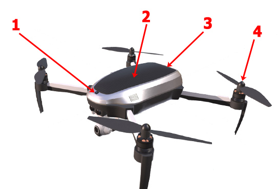
Le sigle «IMU» signifie en français :
Unité de mesure inertielle.
Pour faire avancer un aéronef sans équipage à bord de type 'hélicoptère' :
Il faut incliner le rotor principal vers l'avant.
La résultante d'un courant électrique qui passe au travers d'un conducteur entraine :
Un effet de chauffe.
L'acronyme FTS signifie en français :
Système d'interruption du vol. FTS : Flight Termination System.
A mesure qu'un aéronef multi-rotor ou de type 'hélicoptère' accélère, son attitude devient...
à piquer.
Dans une centrale inertielle (IMU), les accélérations sont mesurées dans un repère orienté selon:
Les axes de l'aéronef (longitudinal, latéral, normal).
Un système de positionnement visuel (VPS) fonctionne avec :
Un système de capteurs optiques (caméras) et des capteurs ultrasons.
L'IMU (unité de mesure inertielle) se trouve :
Dans l'UAS.
La proposition fausse concernant le processus de charge d'une batterie Li-Po ou Li-ion est :
Le chargement peut se faire sans sortir la batterie de l'UAS.
La distance verticale entre votre drone et la surface au sol correspond à :
La hauteur.
La vitesse vraie (vitesse réelle) est la vitesse de l'aéronef :
Par rapport à la masse d'air.
La force s'opposant au déplacement d'un aéronef en vol est appelée...
La traînée.
Un vent d'une vitesse de 15 noeuds équivaut à :
7 m/s.
Météorologie
Le nuage qui indique la présence de courants verticaux importants à proximité du sol est
Le Cumulus.
Une nébulosité de 5 à 7 octas est indiquée dans un METAR par l'abréviation :
BKN. FEW : nuages rare 1 à 2 octas.
SCT : nuages épars c'est 3 à 4 octas.
BKN : nuages fragmentés 5 à 7 octas.
OVC : ciel couvert 8 octas.
Le code NSC :
Indique qu'il n'y a pas de nuages significatifs. NSC (No Significant Clouds) : nuages non significatifs.
Dans un METAR, le codage suivant '8000 3000SW BR' signifie :
Visibilité dominante de 8000 m et minimale de 3000 m dans le Sud-Ouest avec de la brume.
'BECMG FM 1100 -SHRA' dans un METAR signifie
Deviendra, à partir de 11h UTC, averses de pluie faibles. BECMG FM (BECOMING FROM) : devenant à partir de 11h.
Vous prenez connaissance du METAR de Troyes :LFQB 100900Z 31006KT 6000 NSC M00/M01 Q1035= Vous observez la présence d'un important groupe d'oiseaux dans la géographie de vol
Vous attendez que la situation s'améliore pour débuter vos évolutions.
Le code météorologique 'FZDZ' indique :
Bruine se congelant modérée.
Le code météorologiques '+SHRA' indique
Forte averse de pluie. 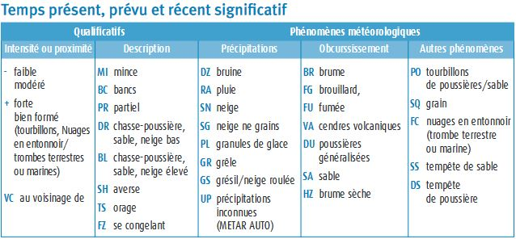
Dans un METAR, la présence de brume (BR) indique une visibilité comprise entre :
1 km et 5 km.
La circulation du vent sur le relief va générer de la :
Turbulence de frottement.
Dans un message METAR, le terme 'VC' signifie :
Au voisinage. situé entre environ 8 et 16 km par rapport au point de référence d'un aérodrome
L'unité de mesure de la pression de l'air dans le système international est...
Le Pascal (Pa). 1 Pa = 1 N/m²
Identifiez le type de nuage qui vous signalera une forte possibilité que l'air est instable :
Le Cumulonimbus.
«Message spécial d'aérodrome, émis quand un changement significatif des conditions météorologiques a été observé».
SPECI.
A une hauteur de 100 mètres vous pouvez estimer que la vitesse du vent est :
50% plus fort qu'au sol.
Dans un METAR, la présence de brouillard (FG) indique une visibilité :
Inférieure à 1 km.
Vous prenez connaissance du METAR de Toulouse Blagnac :LFBO 060800Z 29010KT 9999 SCT016 BKN050 19/16 Q1019 NOSIG=Les nuages qui sont l'objet du code SCT016 couvrent :
Moins de la moitié du ciel et leur base est à 1600 ft.
Indiquer les conditions pour lesquelles les performances d'un aéronef sans équipage à bord seront les meilleures :
Par temps froid, à proximité du niveau de la mer et avec une pression atmosphérique élevée.
Que représente ce symbole sur une carte de temps significatif ?
Averse. 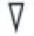
Vous prenez connaissance du TAF de Rodez Marcillac: LFCR 140800Z 1409/1418 25008KT 4000 RADZ OVC002 BKN025 OVC250 TEMPO 1409/1412 1500 DZRA OVC002 BKN020 BECMG 1412/1415 28006KT BKN020 SCT050 BECMG 1415/1418 SCT020 SCT050
Le code TEMPO indique une chute de la visibilité à 1500 m :
Entre 9 h à 12 h UTC.
Le givrage :
Se forme sur les ailes et rotors, entrainant une diminution progressive des performance de l'appareil.
La turbulence thermique dépend : 1 - de l'environnement 2 - des contrastes du sol 3 - du degré d'instabilité de l'air 4 - de la compétence du pilote à distance
1 - 2 - 3.
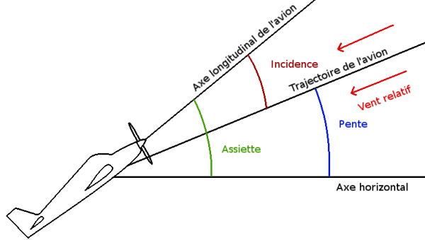
Angles :
entre l'horizontal et trajectoire (aussi appellée vent relatif) --> pente (c'est comment monte l'avion)
l'angle entre trajectoire et axe longitudinal (ou corde de profil) --> incidence.
pente + incidence = assiete : qui est l'ange entre l'axe longitudinal de l'avion et l'horizontal
incidence de l'aile : angle compris entre : La corde de profil de l'aile et le vent relatif.
Météo
METAR --> observation régulière pour l'aviation diffusé toutes les heures ou toutes les demi-heures pour les gros aéroports.
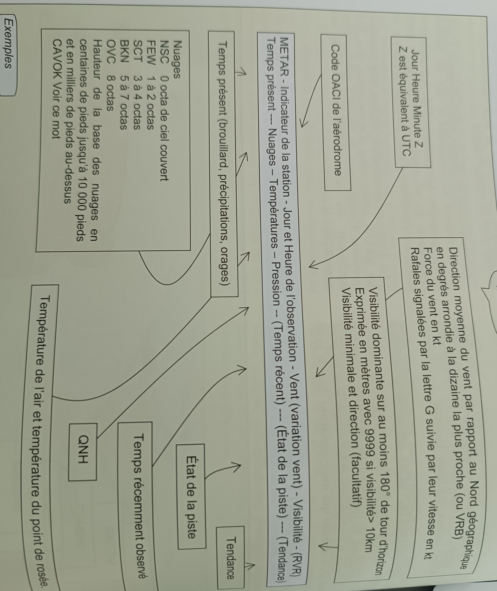 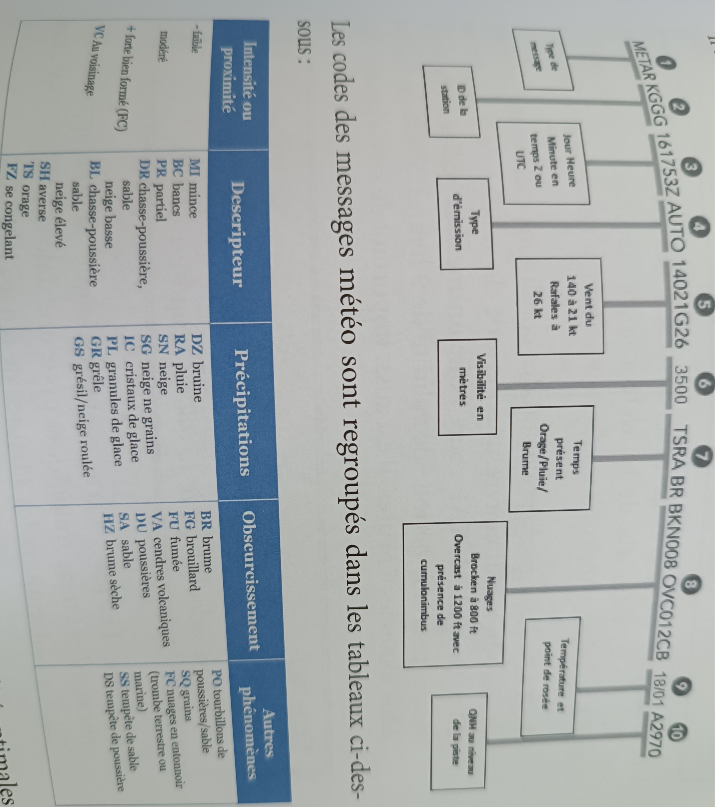
Le METAR peut contenir une partie de prévision TEMPO (temporairement) --> tendance de prévision d'atterrissage valable pour les deux heures qui suivent l'observation.
TAF (prévision) court : tous les 3h valable 9h ; TAF long tous les 6h valable 24h ou 30h
Symboles TEMSI (TEMps SIgnificatif)
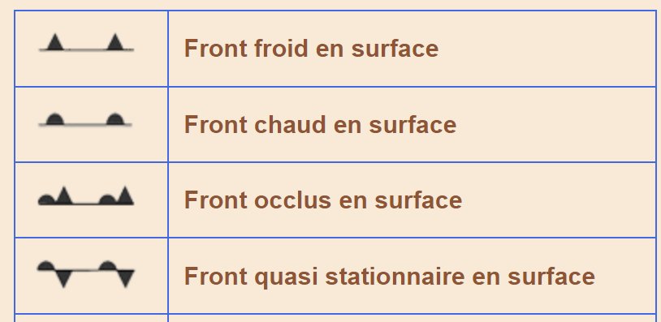  Nuage lenticulaire (1) associé à une onde relief ;
Nuage lenticulaire (1) associé à une onde relief ;
(3) un nuage à caractère de nuage lenticulaire mais mélangé à des nuages de types stratus ou altocumulus
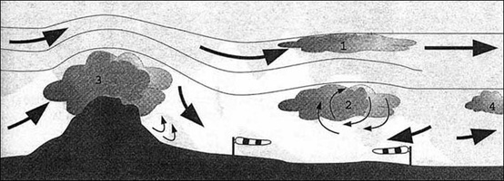
1 cumulonimbus - 2 stratus accrochés au relief - 3 cirrostratus - 4 altocumulus lenticularis (un altocumulus qu’on retrouve en aval du sommet des montagnes sous le vent).
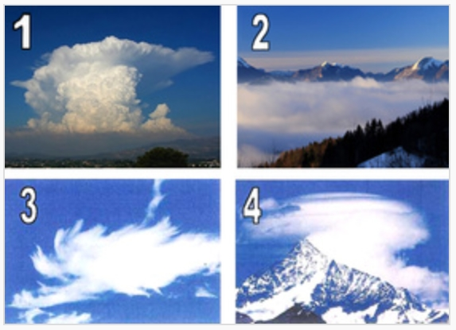
Communication
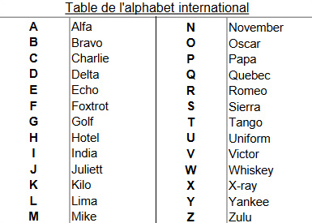